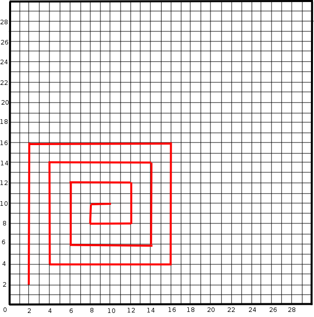

Python For New Programmers
Introductory Exercises
Exercise 1 - A simple algorithm
Create the following 'recipe' algorithms
Your favourite sandwich
A cocktail
Once you have completed them, swap them with the people around you. Discuss any ambiguities in the algorithms.
Exercise 2 - Drawing Patterns
Write an algorithm that will create the following pattern:

Swap it with someone else, and get them to try it out on the grid provided
Exercise 3 - Drawing Patterns
Write an algorithm that will let you draw the pattern in
exercise 2
to a specified size.
Swap it with someone else, and get them to try it out on the grid provided
Extension - Adding an extra 'variable'
Modify the algorithm so that you can specify what the 'gap' between the squares will be
Swap it with someone else, and get them to try it out on the grid provided